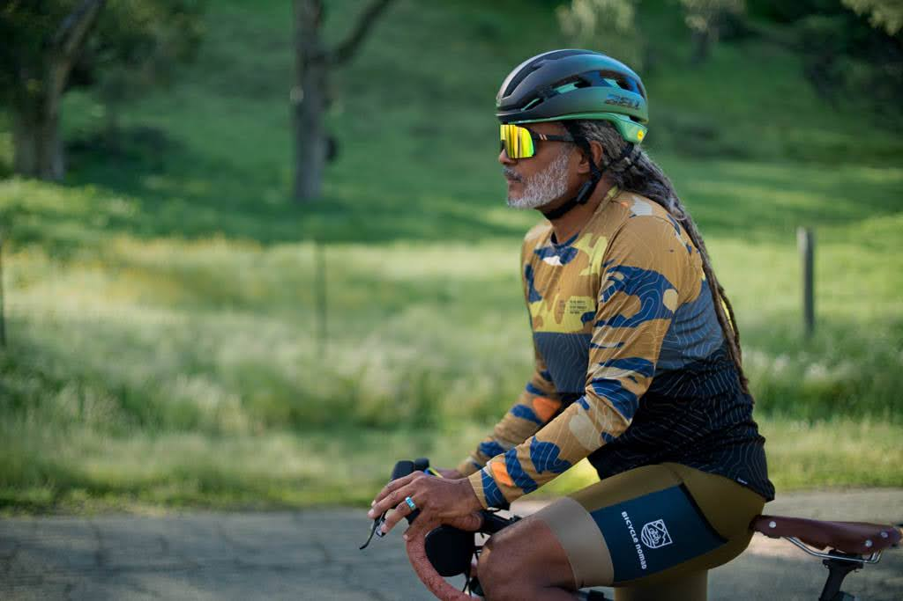

Captain’s Log, stardate 100791.39, or Earth date March 12, 2023.
A bit of meta-captain’s-log: Time flies! As I retroactively complete the Captain’s Log out of my memory and I have good long term memory, I’m already on the opposite side of the, em, stage. I rode like crazy when training for the Green Fondo, and then in April and May when I had to write Voyager v1.2.0 and my thesis, I had to ride less. Then I slacked off in May after I turned in the draft of my thesis, as the hardest part was over, when I began to ride more gravel nearby and took some macro photos of wildflowers along the dirt roads, such as these:
So I got a lot more comfortable riding gravel, getting ready for an upcoming gravel bike tour on Pimu, or in Anglo terms, Santa Catalina Island. Then in June, after my parents visited for my commencement, when I walked across the stage, I kind of felt like I have slacked off enough. I felt sad for 2 weeks afterwards, mourning my student life. To be honest, over 2 months later, I’m still processing. Turns out that there’s a lot of work to do as a postdoc, such as to prepare the Voyager paper for submission, so I haven’t been riding as much this summer compared to last summer. Furthermore, last year, I actually felt like I spent too much time on the voyages, I mean the entire tradition including riding, taking photos, writing Captain’s Logs, editing photos, and looking up more info on places I visited. The voyages shouldn’t have the top priority in my life. Feeling bad about spending too much time on the voyages really ruined the fun. As a result, I have a backlog of photos and Captain’s Logs.
So back to the Captain’s Log about this trip back in March, before all the thesis drama.
Fundraising for the ride
First thing first: THE climate ride is to replace as many car trips with bike trips as possible. This is how charity rides works: No, we don’t magically raise money just by riding. We must raise a minimum amount of money for charities in order to participate, and having a fun trip ahead is a good way to motivate me to step out of my comfort zone to solicit donations. For the Climate Ride, or Green Fondo, we can choose environment-related charities as beneficiaries. I initially chose BikeLA (formerly LACBC), Active SGV (kind of like BikeLA but for the San Gabriel Valley), Intersectional Environmentalist (I met Leah at Sustain LA in March 2022 when she presented her new book), and Rail to Trail conservancy. Wanting to avoid large corporation greenwashing with charities and their racist colonial “carbon offset” projects or technological fixes that don’t question the system that caused the climate crisis, I deliberately chose local organizations I have participated in and don’t suspect any of the above. Intersectional Environmentalist isn’t local, but I chose it because it’s anti-racist. I’m sick of cycling being used as a greenwashing tool. Later I dropped the Rail to Trail one as we could have up to 3 beneficiaries.
Climate Ride, or Green Fondo, is actually nationwide, and I went to the SoCal one as there was a shuttle from LA. I would not fly for Green Fondo as the high carbon footprint of the flight defeats the purpose. This time it was in Santa Barbara County, in the traditional territory of the Chumash, which also includes Ventura, Malibu, and much of the Santa Monica Mountains. The Chumash and Tongva (Indigenous people of most of LA and OC) have very different languages, but they had trade and intermarriage.
I joined Team BikeLA, though I never went to their training rides, because first, my own voyages are more challenging, and second, they often start in Westside, which is kind of far for me. So I never met the other team members until we departed for Santa Barbara for the ride. The process of fundraising was easier than expected, as quite a few people from the PAA donated. One of them showed up as I bought him ice cream as promised. I had to raise at least $495, and achieved the goal pretty quickly. A company behind Green Fondo matched donations for anything in excess of the initial goal, so I ended up going quite a bit beyond the goal. Two other people from the PAA also went to Green Fondo, though I didn’t ride with them. Because I stop for photos much more often than almost everyone else, I will eventually end up riding alone. One of them was Wesley, one of the founders of Active SGV, and former Cat 1 mountain bike racer. Gary works at JPL, and along with tuned into my thesis defense on Zoom. Martha (PAA) and Tom (not PAA but met because of Strava) came to my defense in person, so I see how cycling helps build community.
Alas, I need to renew my PAA membership soon as of writing. Shall I renew? I most likely have less than one year remaining in Pasadena. I don’t know where to go next yet, but most likely outside LA, to experience a different culture. So what do I think of the PAA? I like it in that the people are really nice and the PAA helped me to overcome social anxiety. I met some really cool people there, especially some who keep on riding a lot into their 70s and even 80s. We also get discounts and free classes, including one on gravel skills and a sponsored velodrome session where I learnt to ride a track bike. On the other hand, I find the PAA rather conservative and most members are middle aged or old and rich, not my demographic group. I like the youthfulness and rebellion I find at Critical Mass and CicLAvia. The PAA started as a racing club, and still mainly caters to seeing cycling as a sport, as advocacy is kind of marginal. In contrast, I don’t quite see myself doing a sport; I ride for adventure, to observe and learn. Advocacy plays a major role in my kind of cycling. While I don’t think PAA is bad, I’m questioning whether I’ll renew because I probably got a bad rap in the club after criticizing the climate impact of someone flying to Italy for a bike tour and suggesting going to a destination in California instead. Some people got pretty upset about it, saying they joined a cycling club, not an environmental activist club. But to me, that division makes no sense, because environmentalism is a core reason why I ride. No, Voyager is not a toy. It’s a revolutionary weapon. And yes, I see connections everywhere, which is why I’m unable to compartmentalize my life. I mentioned the PAA in the Acknowledgement section of my thesis. This response I got made me very disappointed.
From LA to Camp Whittier
Friday, March 9. The storms haven’t subsided. Initially I thought about biking to Union Station, but I really had to take the train as I didn’t feel like riding in the heavy rain with a heavy backpack in addition to camping gear. At Union Station, I expected a bus, but couldn’t find any near the location indicated by the event organizer. Someone came to me as I had the bags and the bike, pointing me to the vans. The bikes would go in a separate truck. Most of us were in the van, but we ended up waiting for one more for an hour who was stuck in traffic from LAX. That was Christina from Westchester; she didn’t fly in for the ride, but happened to live near LAX. Nevertheless, we didn’t hold grudges against her; we have some nice conversations along the way, both to Camp Whittier and back. I brought my laptop to get some work done, or at least write some old Captain’s Logs (including the one about the Active SGV Puente Hills ride and hike) on the van. However, the very outgoing Marco from Carson who owns a bike shop and used to race crit made a party, and we had some good conversations. Interestingly, he also has Captain’s Logs, frequently recorded on his phone. For me, recording oral messages gets me really nervous, so I prefer writing, as I can always come back to edit. I also met Cary also from Pasadena, who participates in the Pasadena Complete Streets Coalition, Alex from Santa Monica, and another old man (forgot name) who flew in from Massachusetts and has done a bike tour in Cuba and many Climate Rides. We have very different backgrounds. While I’m a gran fondo veteran, this would be the longest ride ever for Alex and Christina, quite a challenge.
We were stuck in traffic in the Valley, perhaps due to the rain. I think somewhere in either Ventura or Santa Barbara county, we stopped at a gas station for food and restroom. I bought a veggie burrito and some PowerCrunch protein bars whose flavors I had never heard of before. I prayed that we make it there safe. As we were already behind schedule, it was already dark as the van climbed into the mountains holding Lake Cachuma, a reservoir intercepting Santa Ynez River. Camp Whittier, the campground where we stayed, was near the lake. We took a wrong turn and began climbing a very steep road. Hopefully we don’t have to climb it with human power but I probably can (phew, we didn’t). The 154 was the right way. For our lab retreat to Morro Bay and San Luis Obispo in November 2022, we went on the 154, so I dreamed of coming back for a better look. Now the dream came true.
Thankfully, the rain ceased when we arrived at Camp Whittier. I checked in, and grabbed some food. Yay, no single use plastics! It was just some boring intro. Then I hurried up to set up camp. This wasn’t my first time setting up camp in the dark, so I did it just fine. There was a stream (definitely a full blown river by LA standards though the size of those concrete channels indicates how big those rivers can get) near the campground. I found a quiet, secluded spot near a tree by the stream to pray. It was extra spiritual, as the Quran describes paradise as having rivers flowing beneath vegetation, just like here.
Day 1
I had to get up at 6 am for the early departure for the Grande option. I always choose the hardest option at cycling events. When I plan the trip myself, I would typically depart in the late morning and ride in the dark on the way back. But now I had no choice. Becaue I had to re-adapt to sleeping in the tent and periodically got too hot and too cold, I had trouble sleeping. Then when I finally did fall asleep, I woke up to coughs from the tent next door. I’d be a zombie.
The air was damp. Light rain was forecasted, so I brought my raincoat in my large California burrito bag, though didn’t end up using it. The mountain tops were shrouded in cloud in the morning. Along the way there were pastures with cows grazing and later vineyards. I have never seen this kind of landscape in LA, and if I were to see it, it must be in the northwest, north of the San Gabriel Mountains. There were many wildflowers along the way, including the Arroyo lupine, California poppies, and the invasive mustard as expected, but I also saw another kind of yellow flower I don’t see in LA. There was a professional photographer who specializes in portraits on the SAG van, and she got to take photos of me taking photos and I got a photo of her taking a photo of me. Now I’ll just let the photos speak for themselves. Too lazy to get them out one by one here but you can click on the Pixelfed plugin to see a larger version.
When climbing Drum Canyon (valley photos and road with rider in the collection below), I met Alex and Marco again. Frederick from the Bay Area also joined. I got a flat during the climb, and Fred held Voyager for me while I fixed the flat. He has founded a team coming to Climate Ride and has ridden in 12 Climate Rides, and has quit his job to train for riding across the continent next year as a Climate Ride individual action, is one of the coolest persons I have ever met.
I rode with Marco for quite a while, especially on the 246 highway and the stretch after, as we formed a paceline taking turn to pull to conserve energy. In other words, one of us would ride in the front, overcoming drag, while the one behind can draft the one in the front, riding at the same speed with less effort as there’s less drag. We take turns to keep our legs fresh. As the 246 was just another destructive highway, it wasn’t scenic enough for me to stop for photos. But after that, I stopped more often for photos, letting Marco go ahead while I would ride faster to catch up. At a rest stop where we refilled water, we were told that we were 20 miles from lunch and it was mostly downhills. It was not true, because there was a climb, which I didn’t complain about as it was by the beautiful Santa Ynez River with hills covered with yellow mustard flowers (river photos in the collection above). We eventually split up when I consistently rode faster than he did.
We arrived at lunch rather late, like maybe 3 pm, when they were beginning to pack up. I can ride fast, but I stop for photos, so I end up taking more time to get there. Lunch was just reception food, with cheese, crackers, hummus, raw vegetables, and so on. I used the floor pump there to top off the tire pressure. Alex took a wrong turn when looking for lunch and arrived when I was about to leave. Eventually, Alex took the van until near the end. Nevertheless, he rode over 70 miles, his longest ride ever, so it was still heroic. I never bumped into Christina, who did the short route of 30 something miles, but it was her longest ride ever, which she almost couldn’t believe she could do. Before this she had only been riding indoor bikes at spin classes, riding about 12 miles per session.
It rained a little as we were in Drum Canyon. I have long been having trouble turning off my camera, so it would burn through the battery quickly. Since I started having the problem last December when I rode in the rain, I suspected that moisture was causing the problem, so I put the camera in a sealed bag with old silica desiccant from empty Nuun tablet tubes, and it worked. This time it acted up again, perhaps due to the moisture. So my camera was about to die when I was by the Santa Ynez River. I brought a spare battery, but left it in my tent, reasoning that a fully charged battery has lasted through centuries before. What a mistake! So no more photos. I didn’t stop for photos at the Ostrich Farm, or of the beautiful grassy hills under a newly clearing sky from Santa Ynez back to Camp Whittier. Anyway, not much is lost, since I would ride to Santa Ynez and Solvang again on Day 2 and did get some great shots. Later, anything I tried, include the silica bag trick above, and using rubbing alcohol to clean the switch, stopped working to fix the switch. But one thing did: my dad accidentally dropped my camera, when it fell out of his bag when the zipper unintentionally opened, which somehow fixed the switch without damaging other parts of the camera. Maybe the tiny needle in the switch got stuck, somehow due to moisture, but dropping somehow unstucked it.
It took us a while to find where to shower at the camp. There were also massages for the riders, though there wasn’t a space opening for me. I was elated to find a table with radical zines near the cafeteria. So there were some rad people here. I picked up a copy of the first issue the Cyclista Zine, which I later subscribed to, and a copy of the Shift Happens book about Critical Mass. We had dinner, after which we walked in the dark to the ampitheatre to listen to the talk by Bike Nomad (also based in LA), who rode the Underground Railroad and Buffalo Soldiers 1897 route to trace Black history, whom I learnt about from the Bicycle Film Festival and who gave a talk here on Saturday. He not only rides, but also does great in depth research on the history, digging into old newspaper and even diaries and talking to descendants of the Buffalo Soldiers. While I have done crazy things on the bike like climbing over 10,000 feet to Wrightwood carrying luggage and climbing through the San Gabriel Mountains at night, I don’t have the courage to quit any sort of normal looking job to ride full time, though part of me slightly wants to do that. It’s just that I’m too bad at PR (I don’t mean pull request) to get the funding to feed myself.
Turns out that I wasn’t the only person riding with a camera. I met Vernon from NYC who specializes in portraits. However, he eventually dropped off his camera with the van since it kept on swinging to the front when riding. This is why my camera strap has another strap going around the waist, to prevent precisely that. My PS Bagworks strap works, though my complain is that the plastic buckle kind of ruins the fabric of my jersies. Bike Nomad rode with us on Day 2, and Vernon got a nice shot of him:

Day 2
Oh great, daylight saving time. I had to get up at 6 am, but it’s actually 5 am in PST. I had to get up before dawn. Anyway, I slept like dead. Having entered touring mode, I was ready to go. It was partially sunny. I went to the scenic overlook by Lake Cachuma for some photos. The snowy peak in the Los Padres National Forest remained. The routes had been changed several times due to the storm. We couldn’t actually go into the national forest, but today we got as close as we could. We had ride marshals wearing clownish tutus, and I caught one of them at the scenic overlook. I won the photography contest of the event, though not for the photos I expected; the photo of the ride marshal won the contest (somewhere in the collection below).
Then we headed to Santa Ynez and Solvang. I crossed the dangerous 154 highway to take photos of the grassy hill on the opposite side. There was a Chumash reserve in Santa Ynez, with a museum. Then the fog began as I approached Solvang. There was a bike path down the valley by the highway. After the bike path, I specifically checked out Mission Santa Ines. I wonder what the Chumash think of it. Here in LA, some of the Indigenous people find the San Gabriel Mission a sacred place where they connect to their past, as they found their lineage records in the mission when they needed to prove their lineage to get federal compensation of a meager $600 something. Maybe there’s a similar story at Santa Ines.
Next up, the Danish town of Solvang, in the fog. I hung around for quite a while, to take a good look at the buildings and galleries. I somewhat regret not getting the famous fudge there. Later I heard from Christina about the Anderson’s pea soup, which I didn’t know about. I found a recipe and made it myself. Indeed it’s really good, despite the simple recipe.
Next up, Ballard Canyon Rd, through the grassy hills and then vineyards. OK, I don’t drink alcohol, so I don’t care about vineyards, but they can make decent photos. Sometimes I feel like in the default Windows XP wallpaper (I’m that old), though that famous photo was taken in Sonoma in the Bay Area.
I was the last person to arrive at the first SAG stop, and they were packing up. They urged me to hurry up and said I should feel free to call them to pick me up as I had to get back to the camp by 1 pm. I rode faster towards the end of pavement of Happy Canyon Rd, though still stopped for photos. The SAG volunteer at the end of the road, where the National Forest would start, was surprised that riders were still coming. She was also packing up. Then I passed some slower riders when descenting out of Happy Canyon, so I wasn’t the last to arrive at the camp, and I did make it before 1 pm.
Finally, I stopped by the Lake Cachuma scenic overlook again, so see what it looks like in full sun. The snowy peak was clearer.
I had a big lunch at the camp, but had to force myself to hurry up as I had to pack up before 2 pm, the supposed deadline to load my luggage onto the van. Turns out that we didn’t leave until quite a bit after that, as it took a while to load the luggage of everyone. Due to freeway traffic, we took a detour to Ojai, around Lake Casitas, to bypass the traffic, and we weren’t alone in doing so. This was my 3rd trip to this area. There was still some snow over the layered rocks of Sulphur Mountain. Again, traffic jam through the Valley, worse approaching Hollywood and DTLA. But this was the traffic of the Oscar award. It took a while to get to Union Station. Already tired, and with bulky luggage, I took the train home, and happened to be in the same train car as Wesley.
Thoughts
I have met many really cool and interesting people at this event. This is the best part, in addition to the view. Bike people in LA tend to be cool. Does it still apply to places like the Netherlands, where everyone bikes? Since I don’t know much about any city where most people bike regularly, I can’t answer this question. But I suspect that the answer is no. It’s just like Mac computers. When almost everyone used Windows, Mac was seen as cool and countercultural and Mac users feel some sort of affinity with each other. However, when Mac has become so mainstream that almost everyone in my lab uses Mac, nobody thinks twice about it, or don’t think about it at all. LA is not bike friendly. It takes a lot of courage and conviction to brave the traffic and go against the cultural norm. It’s just like using Linux, which is only common among techy people and free and open source software (FOSS) advocates. When proprietary software rules the world and trying to lock us into their ecosystems, it does take courage and conviction to stick to Linux and the FOSS ecosystem. Whereas it doesn’t really take thinking to follow the herd into the status quo. It does take quite a bit of thinking to acquire the courage and conviction, which is what makes bike people in LA cool. That said, I’m not ruling out the existence of people who ended up accepting the status quo after thinking about it.
PS: while I’m using Mac now, for my next computer, I might get a second hand gaming laptop and install Debian myself, or buy Purism. When I bought my Mac, I just went with the flow and didn’t think about the problems with proprietary software, but mass surveillance horror stories, using FOSS R packages extensively for my research, and writing FOSS myself converted me to the cause of Linux.
Meanwhile, bike tourists, regardless of where they hail from, tend to be cool or at least interesting, because even in very bike friendly places, bike touring isn’t mainstream because it’s very physically and mentally demanding. There must be some extraordinary story motivating bike tourists to perform such a demanding activity. If it’s too easy, then it’s not cool anymore.
And what do I mean by cool? Earlier I said that cool is different from good or ethical. There are things that are cool but unethical. Things I find cool all require excellence in some way, as in one of the definitions in the Merriam-Webster Dictionary, and the way must be recognizable as a virtue in the culture of interest. That’s true to fighter jets built for those disastrous wars, since it takes great intellect, knowledge, and skills to design and build them and they have extraordinary supersonic speed and aerobatic agility, where “extraordinary” is relative to culture and person, and extraordinary in something one perceives as good such as speed, in and of itself, or implicitly the great engineering minds and great pilot skills which take a lot of patience and practice to hone. Not all aspects of a cool thing needs to be good, but some aspects must be perceived to be good in some way.
What about coolbutuseless, things like making music with R and a lot of less commonly known uses of R graphics and R’s C internals? That’s still cool, and some of that is not useless. Cool because that takes a very deep understanding of R and R graphics, an understanding that I don’t have.
What about an extraordinarily cute kitten, or an extraordinarily beautiful flower? At least in LA culture, I would say that it’s a little weird to call those things cool. So I suppose “cool” biases towards something majestic. Kittens and flowers are not majestic compared to most humans.
Why did I use the word “cool” before I can explicitly state a definition? Maybe I already have some sort of definition in mind which takes a while to put down to words. Meanwhile writing it down makes me think more carefully about it. Actually much of philosophy is about definitions, such as the definition of free will and science, while I’m just kind of philosophizing coolness.
Then when I say bike people in LA and bike tourists in general tend to be cool, I mean they have something extraordinary in a good way. Such as extraordinary devotion to a cause, sense of justice, courage to go against a bad status quo, camaraderie, grit, and the creativity I have seen in bike cultures. Then am I cool? Maybe. You decide. I always feel ashamed about shameless self-promotion. Or maybe it’s just my biases in favor of bike people, as I’m one of them.